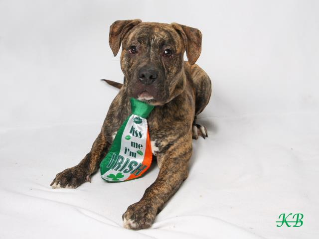
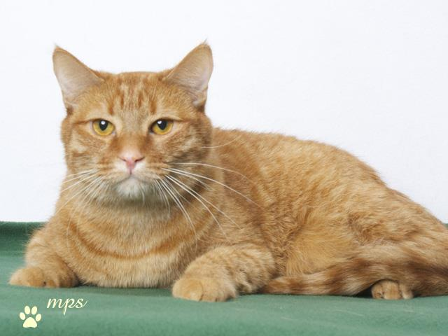

Nebraska Humane Society Pet Finder
Info about PetFinder
This app would be a way for users who were looking for a specific kind of animal to find pets available at the Nebraska Humane Society that match that description. The user would fill out a drop down menu with a basic description of what they were looking for. They could choose between dogs and cats, the sex of the animal and the breed of the animal. They could also choose a basic age range.
Once that information is entered, the computer would come up with animals that match that description, or are the most similar to that description. So, for example, if I'm looking for a male German Shepard, the app would give me the information for Kuno, Twix and Ollie. These records would also show up when you search for a female German Shepard because they are similar. A window would pop up that says something like "no records match your search, but here are similar results."
The data base of animals would look like these charts and would be scraped live from the Nebraska Humane Society Website.
Dogs
| Name | Breed | Age | Color | Sex | Weight | First Day at NEHS | Adoption Fee | Exercise Needs | Ease of Training | Friendliness | Playfulness | Dog Skills | Leash Manners |
|---|---|---|---|---|---|---|---|---|---|---|---|---|---|
| ZEUS | Pit Bull Terrier and Weimaraner mix | 10 months old | Blue and White | Neutered Male | Jan 21, 2014 | 150.0 | Daily Workout | Capable | Outgoing | On Request | Social | Pulls Often | |
| KUNO | German Shepherd Dog | 11 months old | Brown and Black | Neutered Male | Dec 22, 2013 | 150.0 | Marathoner | Eager | Neighborly | Amateur | Tolerant | Pulls Often | |
 TWIX TWIX |
German Shepherd Dog and Labrador Retriever mix | 2 years and 5 months old | Yellow and White | Neutered Male | Jan 26, 2014 | 150.0 | Marathoner | Capable | Outgoing | Semi-Pro | Social | Pulls Often | |
| OLLIE | Great Dane and German Shepherd Dog mix | 11 months old | Black and White | Neutered Male | Feb 28, 2014 | 150.0 | Marathoner | Willing | Outgoing | Semi-Pro | Social | Pulls Often | |
 BOOMER BOOMER |
Pit Bull Terrier and Bull Terrier mix | 2 years and 3 months old | Brown and White | Neutered Male | Dec 08, 2013 | 150.0 | Weekend Athlete | Willing | Bashful | Maybe/Maybe Not | Social | Pulls Often | |
| ALFIE | Labrador Retriever and Pit Bull Terrier mix | 6 years old | Chocolate and White | Neutered Male | Jan 07, 2014 | 100.0 | Daily Workout | Willing | Outgoing | On Request | Social | Pulls Sometimes | |
| SHENZI | Labrador Retriever and Boxer mix | 8 months old | Brown and White | Spayed Female | Jan 13, 2014 | 150.0 | Daily Workout | Capable | Outgoing | Amateur | Social | Pulls Sometimes | |
| PATIENCE | Pit Bull Terrier and American Bulldog mix | 3 years old | White and Brown brindle | Spayed Female | Feb 07, 2014 | 150.0 | Daily Workout | Capable | Neighborly | On Request | Tolerant | Pulls Often | |
 ROSIE ROSIE |
Chihuahua - Long Haired mix | 3 years old | Black and White | Spayed Female | Feb 22, 2014 | 150.0 | Weekend Athlete | Capable | Outgoing | Maybe/Maybe Not | Social | Almost Never Pulls | |
| BRUNO | Boxer mix | 3 years old | Brown and White | Neutered Male | Mar 01, 2014 | 150.0 | Daily Workout | Willing | Outgoing | On Request | Social | Pulls Often | |
 SHILOH SHILOH |
Labrador Retriever mix | 6 months old | Black and White | Neutered Male | Mar 02, 2014 | 200.0 | Daily Workout | Capable | Outgoing | Amateur | Social | Pulls Sometimes | |
| LANCE | Labrador Retriever mix | 4 years old | Tan | Neutered Male | Mar 04, 2014 | 150.0 | Weekend Athlete | Capable | Bashful | Maybe/Maybe Not | Selective | Pulls Often | |
| MARSHMALLOW | Boxer and Pit Bull Terrier mix | 1 year old | Brown brindle and White | Spayed Female | Mar 05, 2014 | 195.0 | Daily Workout | Capable | Neighborly | On Request | Social | Pulls Sometimes | |
|  CALVIN | Mastiff mix | 9 months old | Brown brindle and White | Neutered Male | Mar 05, 2014 | 250.0 | Daily Workout | What`s Training? | Outgoing | Semi-Pro | Social | What is a Leash? | |
| SHAYNA | Labrador Retriever mix | 3 years old | Black and White | Spayed Female | Feb 26, 2014 | 150.0 | Marathoner | Eager | Loves Everyone | Semi-Pro | Social | Pulls Often | |
| ROCKO | Cocker Spaniel and Yorkshire Terrier mix | 3 years old | Black and Brown | Neutered Male | Mar 10, 2014 | 150.0 | Weekend Athlete | Capable | Loves Everyone | On Request | Social | Pulls Sometimes | |
| LANCE | Labrador Retriever mix | 4 years old | Tan | Neutered Male | Mar 04, 2014 | 150.0 | Weekend Athlete | Capable | Bashful | Maybe/Maybe Not | Selective | Pulls Often | |
| ROLLO | Labrador Retriever and Basset Hound mix | 9 weeks old | Chocolate | Neutered Male | Mar 07, 2014 | 250.0 | Daily Workout | Capable | Loves Everyone | On Request | Social | What is a Leash? |
Cats
| Name | Breed | Age | Color | Sex | Weight | First Day at NEHS | Adoption Fee |
|---|---|---|---|---|---|---|---|
| GINGER | Domestic Shorthair mix | 15 years old | Tortie | Spayed Female | 12 pounds | Feb 15, 2014 | 35.0 |
 COWBOY COWBOY |
Russian Blue mix | 8 years old | Gray | Neutered Male | 15 pounds | Mar 12, 2014 | 35.0 |
| GABBY | Domestic Shorthair mix | 7 years old | Brown tabby | Spayed Female | 15 pounds | Mar 13, 2014 | 35.0 |
| TROUBLE | Domestic Shorthair mix | 5 years old | Brown tabby and White | Neutered Male | 14 pounds | Mar 10, 2014 | 50.0 |
| JASMINE | Domestic Longhair mix | 4 years old | Brown tabby | Spayed Female | 13 pounds | Feb 25, 2014 | 50.0 |
| GRACIE | Domestic Shorthair mix | 7 years old | Black | Spayed Female | 17 pounds | Mar 09, 2014 | 10.0 |
 HUEY HUEY |
Domestic Shorthair | 3 years old | Gray tabby and White | Neutered Male | 12 pounds | Mar 12, 2014 | 50.0 |
| MERLIN | Domestic Shorthair mix | 1 year and 8 months old | Gray and White | Neutered Male | 12 pounds | Mar 14, 2014 | 75.0 |
| ZAZZY | Domestic Shorthair mix | 1 year and 8 months old | Black and White | Spayed Female | 14 pounds | Jan 29, 2014 | 75.0 |
| BRIE | Domestic Mediumhair mix | 9 months old | Orange tabby | Spayed Female | 8 pounds | Feb 26, 2014 | 75.0 |
|  MEMOW | Domestic Shorthair mix | 2 years and 1 month old | Orange tabby and White | Neutered Male | 16 pounds | Feb 21, 2014 | 50.0 |